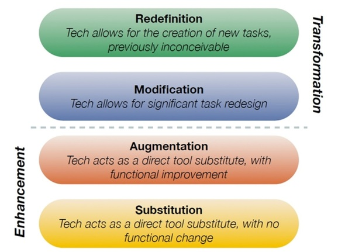
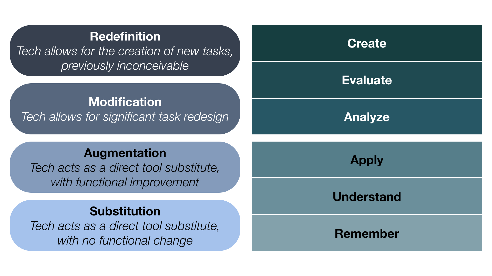

Technology Leadership in TESOL
Introduction
As educators, a common thread that ties us together is the notion of the power we hold
as leaders in the second language classroom. Whether you are a pre-service instructor or
have been teaching for many years, most TESOL educational programs are designed to
elicit the understanding that the many leadership aspects we stand to inherit as
instructors are essential to the success of our students and classroom systems.
In recent times, it has become difficult not to take into account the current pressures
regarding the advancement and use of technology in teaching and learning.
Technology can
play a considerable part in becoming an effective educational leader as the importance
and usefulness of digital literacy is becoming increasingly more widespread in student
engagement and learning. This article aims to assist educators in deepening their
understanding of what educational leadership is, how it relates to technology
integration in the Second Language classroom, and how we can implement leadership
principles through effectively integrating technology to create meaningful learning
ecosystems.
Goals & Objectives
You will be able to:
- 1. Describe the impact sociocultural teacher-centered and student-centered pedagogical approaches have on sociotechnical TESOL classroom environments.
- 2. Recognize the leadership qualities of various instructor experience levels and the goals of effective leaders as specified by the TESOL field.
- 3. Describe the SAMR Model, its relationship to Bloom's Taxonomy, and its usefulness in conceptualizing technology integration in the TESOL classroom.
1. Current Knowledge of Technology Integration in Second Language classrooms.
Perspectives on Technology
Some research has worked to establish the idea that an instructor’s beliefs about
technology are essential in determining the extent of technology use in the classroom
(e.g., Becker, 1991; Campoy, 1992; Faez & Valeo, 2012; Fisher, 1999). In TESOL contexts,
instructors are generally seen to be inadequately informed about technology and its
integration through formal contexts and are more likely informed by their workplace
practices and peers (Fuchs & Akbar, 2013; Kim, 2008).
Fuchs and Akbar (2013)
and Kim
(2008) illustrate their findings regarding the effects on teaching philosophies and
technology use in adult ESL contexts. The purpose of the study implemented by Fuchs and
Akbar (2013) was to “identify areas of improvement for teacher education programs with
regard to technology-enhanced language teaching and student teachers' professional
development” (p.157). The researchers asked questions regarding what kind of prior
technology experience and training Intensive English Program pre-service teachers
received, how important they considered technology implementation in their language
teaching, how they rated their proficiency in using technology tools, and how often they
used these tools in teaching. The results showed that more than half of respondents had
either a negative view of classroom technology use or a basic view of technology use
that did not fully align with expert established integration practices.
Meanwhile, Kim
(2008) suggests that the use of computers in the classrooms of ESL instructors varies
depending on the teachers’ individual perceptions and expectations of computers. The
study aimed to explain technology perception of L2 instructors, expectations for
Computer Assisted Language Learning (CALL) integration, and thoughts about CALL
integration assisting language learning for students. The findings of the study discuss
that participants typically viewed technology integration in their classrooms
positively. However, as also seen in Fuchs and Akbar (2013), their ideas of technology
integration were not consistent with what CALL literature defines as effective
technology integration. Namely, the approach to teaching using technology was often
opposite to those expertly considered more effective.
Approaches to Technology Integration
In the realm of Second Language instruction, many studies have noted that technology assisted classrooms are viewed to be inherently different from face-to-face traditional instruction (Churn, 2016; Egbert, Paulus, & Nakamichi, 2002; Hubbard, 2018; Hannafin & Land, 1997; Levy, 1996;). Primarily, this difference has been noted as relating to student-centered (focus on student learning) and teacher-centered (focus on instructor teaching) styles. Some researchers inform the literature regarding student-centered and traditional teacher-centered philosophies plainly asserting that teacher-centered beliefs do not facilitate successful computer integration (Miller & Olsen, 1994; Wang, 2002). Others seem to concur by asserting that successful integration of technology requires a philosophical adjustment from a teacher-centered style to a student-centered style which garners very different decision-making practices for instructors (Pedersen & Liu, 2003; Sandholtz, Ringstaff, & Dwyer, 1997). The difference between Teacher-Centered (a.k.a. Traditional) instruction and Student Centered instruction is significant. An example of the difference in an instructors decision making process within these two approaches can be explored below.
| Teacher-Centered Thoughts to Integrating Technology | Student-Centered Thoughts to Integrating Technology |
|---|---|
| 1. “I will make a course website for students to explore for this assignment because I can control the resources. Therefore, the work will be easier for me to grade.” | 1. “Students will become more technologically proficient by making a course website together. They will practice their English collaboratively by researching the required topics and synthesizing from reputable resources they find on the web.” |
Studies show that L2 instructors generally conceptualize themselves more in line with a
student-centered instructional role by facilitating instruction when integrating
technology into their classrooms (Meskill, Mossop, & Bates, 1999; Norton & Gonzales,
1998). However, as mentioned previously, these self perceptions did not always hold up
in practice. In other words, instructors may, for some reason or another, lack
self-awareness by self-identifying as student-centered in their teaching approach, but
exemplify a teacher-centered approach in actual practice.
With that said, instructors were also more likely to welcome and adjust to the ambiguity
of successful integration, as well as utilize opportunities to learn more information to
integrate technology more smoothly and effectively into their classrooms (Berg, Benz,
Lasley, & Raisch, 1998). However, Strudler and Jones (1999) remark that inexperienced
and experienced instructors both utilize technology in ways that correspond with their
current philosophies at play, rather than transforming their practice using technology.
Kagan (1992) further notes that instructors who were overall inexperienced at teaching
encountered more impactful effects caused by the ambiguity of integration. In other
words, depending on experience level, instructors may not feel as free to integrate
technology into their classrooms and therefore can focus more on teacher-centered
developmental stages such as those described by Gatbonton (1999).
Gatbonton (1999) finds that the pedagogical choices of experienced ESL instructors are
often guided by common specific patterns of mental acts revolving around the following:
a) Language Management (making sure students are producing and receiving correct
language input), b) Student Knowledge (making sure students have accurate information
regarding language), c) Procedure Check (making sure lessons are unfolding as planned),
and d) Progress Review (making sure students remember or use certain language features).
Meskill, Mossop, DiAngelo, and Pasquale (2002) who stated in a comparable study “What is
fairly well understood is that experienced teachers who use technologies effectively
with their students can be broadly characterized as viewing technology as a means rather
than an end to learning” (p. 46). This suggests that while experienced technology
integrators are student-centered, inexperienced instructors are well understood to be
oppositely teacher centered.
The practice of either approach may impact measurable
stages of teacher development and process.
Similarly, in more recent ESL contexts, instructors who have shown some experience with
technology integration were seen to utilize more tool variation, integrate more
authentic materials, and engage students more technologically. However, most
interactions with technology in these groups are limited to lesson planning over actual
technology integration (Fuchs & Akbar, 2013; Kim, 2008). Thus, suggesting that
instructors may still err more toward a teacher-centered approach by attending more to
the concrete “Procedure Check” element of teaching rather than what students could do
themselves with technology to learn.
2. Leading Technology Integration in Second Language classrooms.
Technology Leadership
In 2008, the International Society for Technology in Education (ISTE) developed a rubric scale detailing the different expectations regarding technology integration for a variety of experience levels. The rubric begins with the “Beginning level” and ends with the “Transformative level”:
- The Beginning level teacher is a beginner in the use of technology tools and his or her ability to effectively use technology to improve his or her teaching and to help students learn.
- The Developing level teacher is becoming more adept and flexible in his or her use of technology tools.
- The Proficient level teacher is one who uses technology tools effectively in the improvement of student learning.
- The Transformative level teacher uses technology tools in collaboration with the active student learner that address the global and digital environment we live in today.
Also in 2008, the ISTE developed the National Educational Technology Standards (NETS) to guide what stakeholders in educational settings (i.e. Instructors, students, administrators, etc.) should know functionally and cognitively about effectively participating in the digital world. According to these standards,
“Effective teachers model and apply the National Educational Technology Standards for Students (NETS-S) as they design, implement, and assess learning experiences to engage students and improve learning; enrich professional practice; and provide positive models for students, colleagues, and the community.”
In more basic terms, the standards indicate that instructors:
- Learn by “Continually improving their practice by learning from and with others and exploring proven and promising practices that leverage technology to improve student learning.
- Lead by seeking out opportunities for leadership to support student empowerment and success and to improve teaching and learning.
- Support digital citizenship by inspiring students to positively contribute to and responsibly participate in the digital world.
- Collaborate by dedicating time to collaborate with both colleagues and students to improve practice, discover and share resources and ideas, and solve problems.
- Design by design authentic, learner-driven activities and environments that recognize and accommodate learner variability.
- Facilitate by facilitating learning with technology to support student achievement of the ISTE Standards for Students.
- And analyze to understand and use data to drive their instruction and support students in achieving their learning goals.
A more comprehensive list of the standards and performance indicators this
organization
encourages instructors to meet can be found at their website www.iste.org/standards/for-educators.
In the same year, the TESOL International Association outlined a
framework
for
technology integration standards which build on the NETS standards
established
above.
This framework outlines specifications for technology integration goals, models, and
performance indicators for instructors and students in the language learning field.
The main goals:
- Goal 1. Language teachers acquire and maintain foundational knowledge and skills in technology for professional purposes.
- Goal 2. Language teachers integrate pedagogical knowledge and skills with technology to enhance language teaching and learning.
- Goal 3. Language teachers apply technology in record-keeping, feedback, and assessment.
- Goal 4. Language teachers use technology to improve communication, collaboration, and efficiency.
The TESOL International Association framework is substantial and even contains
examples
of what instructors can do to implement each of the goals in a classroom
environment.
While very useful, there is a danger in focusing so heavily on what instructors
can
do
to meet the
goals. This focus can be interpreted as too heavily assuming that the scenarios
present
in the examples will be
universal across all contexts. Thus, it leaves too much burden on the language
instructor to abstract each example to fit their own living context. This can lead
to
serious implications in the actual standardized practice of the listed goals in the
framework.
What the framework seemingly fails to do is offer insight into how instructors
should think as technology
integrators.
So, how should we think as technology leaders in the TESOL field? The answer this
article proposes is to practice the process of thinking about the
meaningfulness of
technology integration in one’s classroom.
3. How to conceptualize meaningful uses of technology in the Second Language classroom.
Meaningful Technology Integration
With the framework of technology integration standards in the TESOL field in mind, this article suggests that there are two main ways that technology integration can show up in TESOL classrooms. Teacher-Centered Meaningful Technology Integration is the utilization of technology in a way that directly impacts instructional practices. Student-Centered Meaningful Learning is the use of technology in a way that directly impacts student learning within a classroom environment. Both integration types are critical in the successful and effective leadership of technology integration in TESOL classrooms. However, the difference between them is critical to understand for creating well-rounded integrated environments.
Teacher-Centered Meaningful Technology Integration
Meaningful technology integration can be appropriately teacher-centered. This article
asserts that student-centered teaching is essential to the meaningful learning of an L2,
but it does not aim to promote the thinking that all use of technology in a classroom
must directly benefit students. Thus, it is important to note the distinction between
appropriately teacher-centered technology integration and inappropriately teacher
centered technology integration.
Appropriate:
1. “I will make a course website for students to explore for this assignment because I
can control the resources, and it will be easier for me to grade. Additionally, I won’t
need to spend a lot of time that I don’t have teaching advanced research skills to this
lower level class.”
Inappropriate
2. “I will make this assignment into an interactive online module. I want to practice my
skills with this new software I found. It is really popular, and if I need a new job, I
can put it on my resume to stand out as a candidate.”
Adult instructional design experts Larson and Lockee (2014) state that technology should
always be used to support specific instructional needs (p.184). In a classroom system,
the teacher-centered need for classroom productivity and management technology tools is
logical for the success of the system. Thus, tools that enable easy grade tracking and
content management for example directly impact the instructor’s time and actions, but
also benefit the system as a whole, and the students indirectly.
Similarly, Howland et al. (2012) state that a valid form of technology integration is as
an information vehicle to support learning construction via accessing information needed
to complete assignments. They also clearly stipulate that in using technology “Knowledge
cannot be delivered. Information can.”(pg. ). This article does not contest that
information is one of the most important elements to the successful implementation of
higher-level thinking assignments and learning. Therefore, utilizing technology to
simply present information can absolutely be a valid pedagogical choice throughout some
contexts in the TESOL field when used in tandem with other meaningful tasks. This is
especially pertinent in review and resource content.
However, utilizing technology to present information without consideration to how it
affects students and why it is being done is less valid. A critical message from Larson
and Lockee (2014) states that learners can always recognize when technology is used
without significant meaning to them. This can easily cause resentment toward technology
and the instructors who insist on implementing it. (pg. 185).
Student-Centered Meaningful Learning
Technology integration that directly impacts instructors is centered around the idea of
meaningful integration. Technology integration that directly impacts student’s is more
centered around the idea of meaningful learning.
According to Howland et al. (2012) learning is motivated by understanding and persisting
on a task or activity. Tasks are meaningful when they require certain cognitive and
behavioral acts. Namely, “Tasks are meaningful when they require intentional, active,
constructive, cooperative, and authentic learning” (p.2). Understanding exactly what
these features mean is crucial to conceptualizing meaningful technology use.
First, active learning is manipulative and observant. When a student is
actively engaged
in a task, they are challenged to interact and experiment with features and rules of the
task that are critical to real-life implementation. While this feature is crucial in the
make-up of a meaningful task, it cannot stand alone.
Constructive learning encourages articulation and reflection via
challenge and
ambiguity. When a student is engaged in a constructive task, they are consumed in
expressing accomplishments and are reflective about what they have learned from the task
and their observations of it.
Constructive learning is goal-directed and well-managed. When a student
is
engaged in an
intentional activity, they are purposefully attempting to achieve a goal. Because
students are deliberately trying to fulfil an intention, thinking and learning around
that goal increases.
Authentic learning is complex and contextual. Students are engaged in
authentic
tasks,
they are able to take the constructions they make from the task and use them in
meaningful real-world or simulated environments. Students can consistently transfer
items learned in an authentic task to a variety of new situations.
Lastly, cooperative learning is collaborative and conversational.
Students work
together
to build knowledge through communal meaning-making. Students take advantage of one
anothers skills and understandings and use them to solve problems and perform tasks.
Overall, the Howland et al. (2012) assert that meaningful learning is interrelated,
interactive, and independent. It should be born from combinations of the above types of
learning. Below, you will find one scenario of technology integration in the Second
Language
classroom. Each of the scenarios will exemplify a non-meaningful use of technology and a
meaningful use of technology. Read both and try to determine which is the meaningful
scenario based on the elements of meaningful learning listed above. An explanation of
how the integration practices align with
the elements of meaningful learning will also be provided later in the article.
Scenario 1
During a grammar lesson on articles in a level B1 Grammar course at an Intensive English Program, an instructor attempts to integrate technology into the lesson by designing a Google Slide deck on the topic. On his first slide, he includes a 5 minute youtube video about the subject. After presenting the video to the class, the teacher moves to the second slide where he has listed four grammar exercises regarding the topic which he does with his students as a group. He moves to the third slide where he has placed four more exercises which he instructs his students to do on their own. After a period of time, he instructs his students to briefly share their answers. Then, he walks the class through each exercise one at a time asking for volunteered answers from the audience. After a few students speak up, he offers detailed explanations regarding the correct answers.Scenario 2
During a grammar lesson on articles in a level B1 Grammar & Composition course at an Intensive English Program, an instructor attempts to integrate technology into the lesson by designing a video project. The instructor begins by sharing an online instruction document for the assignment on the class learning management system. For this project, groups of three must create a 2-3 minute video using the software Stop Motion Studio. In the video an inanimate object of their choice introduces itself and gives a tour of a freely accessible room or section of the school or other close and easily accessible space. Alternatively, students can offer a tour of an imaginary space created by the group as a series of drawings. For the content of the video, groups must focus on what the tour guide in their video (narrated by a group member) will say. Before they start filming their video, groups must use an online document to produce a script which contains a written description of the scenes they plan to film and a complete script in full sentences with the target feature clearly identified with color highlighting. The instructor encourages groups to help each other use the correct articles in their scripts by appropriating group member knowledge, research from the internet via links provided on the instruction document, and --as a fallback-- the instructor. Groups in the class will be assigned to approve each other's scripts before a group can begin filming (as an extended homework assignment). When products have been completed, each group will showcase their work to the class who will discuss the most interesting features of the videos.Answers
Scenario 1: Non-Meaningful Technology Integration Example. Explanation: The technology integration in the above scenario is more meaningful than the scenario before it. Firstly, the learning is active. Students are challenged to create a product where they must manipulate their knowledge of article use in a product of their own. The task is constructive as students are presented with ample opportunity to construct their understanding of article use by talking about and reflecting on challenges and observations of the task. The project is intentional in that the instructor has provided a well-managed, easily accessible instruction document which clearly states the goals of the assignment students are expected to meet upon successful completion of the task. Furthermore, the task is authentic by being complex and contextual. Students will be able to take the language constructions they generate from the task and use them in other similar and new situations. Finally, the task is highly cooperative because it includes a large number of opportunities for students to work together to build knowledge through communal meaning-making and taking advantage of one anothers skills and knowledge.Although this scenario does include technology use, the implementation of integration is lacking the elements that comprise meaningfulness. Students are not challenged to be active by interacting and experimenting with aspects and rules of the target language feature. They are not encouraged to reflect on their accomplishments within the technology facilitated task, nor do they converse about their ideas regarding the task in any significant way. The task is intentional in the sense that it aims to intentionally cover a specific grammar feature, but students are not specifically asked to purposefully attempt to achieve a goal. The authenticity of the task in the scenario is dependent on the goals of the lesson which weren’t specified. If the goal for this course is for students to learn how to answer grammar exercises about article use for testing purposes, then this scenario could be counted as authentic. However, if the goal of the course is to encourage more accurate and fluent spoken English overall, the task is not authentic because it does not align with the goals of the course. Finally, the task is not collaborative or conversational. Students are asked to share their answers from an individually taken test; however, this is not collaborative or conversational as much as it is likely students simply reading their answers to one another.Scenario 2: Meaningful Technology Integration Example. The technology integration in the above scenario is more meaningful than the scenario before it. Firstly, the learning is active. Students are challenged to create a product where they must manipulate their knowledge of article use in a product of their own. The task is constructive as students are presented with ample opportunity to construct their understanding of article use by talking about and reflecting on challenges and observations of the task. The project is intentional in that the instructor has provided a well-managed, easily accessible instruction document which clearly states the goals of the assignment students are expected to meet upon successful completion of the task. Furthermore, the task is authentic by being complex and contextual. Students will be able to take the language constructions they generate from the task and use them in other similar and new situations. Finally, the task is highly cooperative because it includes a large number of opportunities for students to work together to build knowledge through communal meaning-making and taking advantage of one anothers skills and knowledge.
Howland et al. (2012) go on to assert a final important element of meaningful learning
which is essential to successfully combining meaningful learning with technology
integration. They insist that meaningful learning engages students to “learn with
technology, not from it” (p.5). The implications of this statement relate directly to
the assertion that successful technology integration in classrooms is student-centered
rather than teacher-centered because of the primary impact on student learning. However,
successful technology integration is not simply limited to student-centered meaningful
learning. TESOL educators must think about how to use technology to facilitate learning
in students and how to utilize technology for classroom management and job productivity
as well.
Now that we have discussed what constitutes meaningful learning. We will explore how to
evaluate the implementation of technology in assignments.
4. Evaluating Technology Integration in the Second Language Classroom.
Assessing your Classroom Context
Leading the implementation of technology into your Second Language classroom, as we have
learned, requires a student-centered approach and a meaningful focus. Generating or
selecting assignments to integrate technology into for use in the classroom can be quite
difficult. There is a lot to consider in reference to how and why the technology needs
to be implemented at all. In order to begin evaluating technology integration in your
classroom, you must know exactly what your classroom context is trying to accomplish in
terms of goals and objectives.
Bloom's Taxonomy is often used by instructors to set the goals and objectives of a classroom environment. However, it can also be used to organize the purposes and expectations of individual assignments. The higher up on the hierarchy, the more complex and abstract the objectives of the assignment are. Using the Meaningful Technology Integration from previous examples, a Grammar course might aim to encourage the creative and abstract use of target language features in authentic situations. An indivudual assignment goal from the article targeting video project might be to accurately evaluate the accuracy of abstract article use in a written work developed by peers by identifying at least 80% of errors present.
The SAMR Model
The SAMR model was developed by Dr. Ruben Puentedura (2014). The model is described as
“a way for instructors to evaluate how they integrate technology into their teaching”.
It was built on the principle that instructors are facilitators who encourage students
to take ownership of their education.
The module consists of four steps that represent increasing complexity in how technology
is utilized in the classroom.

The model is divided into two sections. The Enhancement tier of the
model deals with substitution and augmentation. Enhancement
elements are simple and concrete. They do not require higher-level thought processes
like critical thinking, problem solving, and synthesizing.
In simple terms, Substitution of technology acts to enhance learning by
replacing
another mode of instruction. Imagine you are teaching a Listening & Speaking ESL course,
and you want to encourage your students to learn new vocabulary and phrases. Each week,
you assign a worksheet where students write down 1-2 new words or phrases they recently
learned and submit it at the beginning of the next class. Instead of passing out a paper
worksheet, you send out a Google Docs template for students to fill out and submit. In
doing this, you are now integrating technology by substitution. Despite the fact that
you are using technology, there is no real change in how the information is recorded or
the complexity by which it is presented or recorded from paper worksheet to digital
worksheet. However, learning is enhanced because students can revisit their copies of
this work and interact with it whenever they wish.
Next, Augmentation is the step in the model that incorporates
substitution, but requires a
higher level change in the function of technology and allows for the expanding of the
information. Let’s say you now require students to use more features in the Google Doc
rather than just writing text. Now, you require students to incorporate related imagery
to their word(s) or phrase(s) by uploading pictures. You also want them to utilize text
coloring and highlighting features to represent which word families the recorded
vocabulary words belong to. In this way, not only is the technology being used to record
the students’ work, it is being used to enhance productivity by providing tools students
can use to efficiently complete the assignment with success. Learning is enhanced
because students are given the opportunity to understand more information about the new
words and phrases than they may have been able to by completing the same assignment
without the technology.
The transformation tier of the model deals with modification and redefinition.
Transformation elements are complex and abstract. They do require higher-level thought
processes like critical thinking, problem solving, and synthesizing. Additionally, they
often encourage collaboration and student ownership of assignments.
Modification is performed when the technology being integrated
significantly changes the
way a task is performed or thought about. Using the same new vocabulary and phrases
assignment, you might --for example-- now require groups of students complete their
assignment on a shared document where they are then asked to generate a brief informal
discussion using the comments function about the words recorded by each group member.
Students may be encouraged to share their own personal or cultural experiences with the
word, their personal thoughts about the word or phrase. They might also inquire about
peer perceptions or understandings of the word or phrase. Overall, students are no
longer completing the assignment with an individualized focus on the information. The
introduction of collaborative tools to incorporate student voice completely changes the
way the assignment is executed. Learning is enhanced because students can incorporate
and construct different perspectives into their understanding of the content.
Redefinition requires students to create by thinking about and
understanding projects in
completely new ways usually with a bigger audience than the immediate classroom
environment in mind. For example, you might have students select 5 words and/or phrases
from the lists they have accumulated. Then, task groups of students create a five
episode language podcast where they take turns formally interviewing native speakers
about the words or phrases to gain more perspectives and insight into how they are used
(i.e. formality, frequency, meaning, etc) and personal experiences or stories with the
words and phrases. Students must not only perform the interviews for their podcasts,
they must define what the episode structure will involve in terms of questions asked and
interview flow. Redefining this assignment means students are actively creating in ways
that the original assignment would have never allowed. Learning is enhanced because
students are using a number of different skills such as communication and critical
thinking to generate a deeper understanding of the target feature.
If you want more information and examples of how SAMR can be used to conceptualize
technology integration, view the video below.
Bloom's Taxonomy and the SAMR Model can be used in tandem to identify and conceptualize exactly how technology integration aligns with course and assignment goals and objectives. As seen in the image below, Bloom’s Taxonomy can be split into the same two tiers as the SAMR model to create six more detailed definitions of how to evaluate and create technology integration in classrooms.  The Enhancement tier consists of the Bloom’s Taxonomy elements of Remember, Understand, and Apply. These elements align with the SAMR model elements Substitution and Augmentation. The Transformation tier of the SAMR aligns with Analyze, Evaluate, and Create - the more abstract and complex elements on Bloom’s Taxonomy.
Conlusion
Technology leadership in TESOL requires more than simply knowing what the industry goals and standards regarding technology integration are. Rather, it is knowing how to think with the standards in mind that takes you from a beginning leader to a transformative one. As TESOL educators, being “Transformative” means to innovate. This article specifically identifies the above framework and model as ways of organizing an approach to teacher-centered and student-centered learning and teaching. Thus, being able to think critically about how we integrate technology into our practice rather than trying to adhere to the simplistically set standards too closely is critical to being transformative technology integrators in the TESOL field.